Yoshika, Shimane: things to do, food and stays
Yoshika · Shimane
Yoshika
Highlighted on the Shimane map.

Stay
むいかいち温泉ゆ・ら・ら

Muikaichi Onsen Yu Ra Ra
Inn at Muikaichi Onsen in Arimeshi, Yoshika.
Dining
柿の里

Kaki No Sato
草の庭
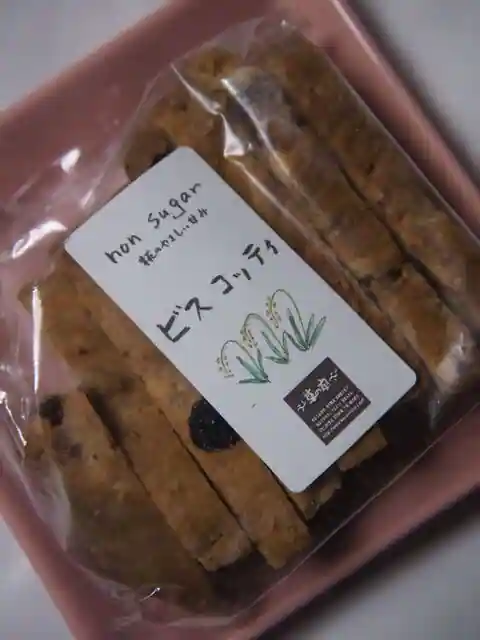
Kusa No Niwa
ラーメン大将
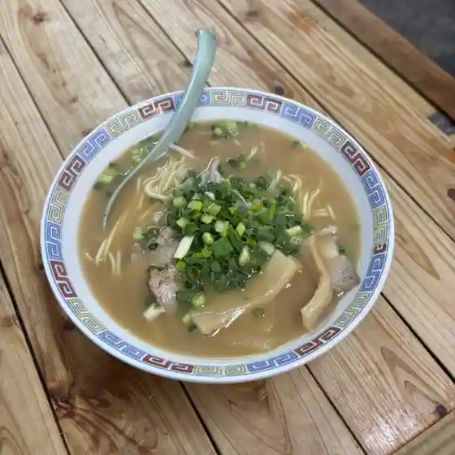
Ramen Taisho
ピッツェリア・ドメニカーナ・オカダ
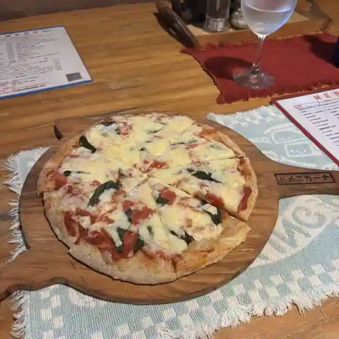
Pizzeria Domenikana Okada
アスカ
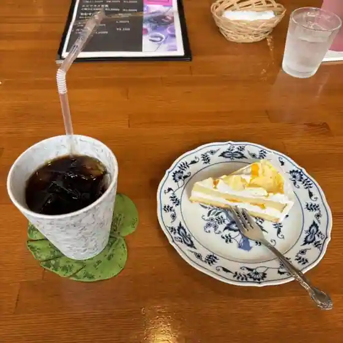
Asuka
原田屋旅館
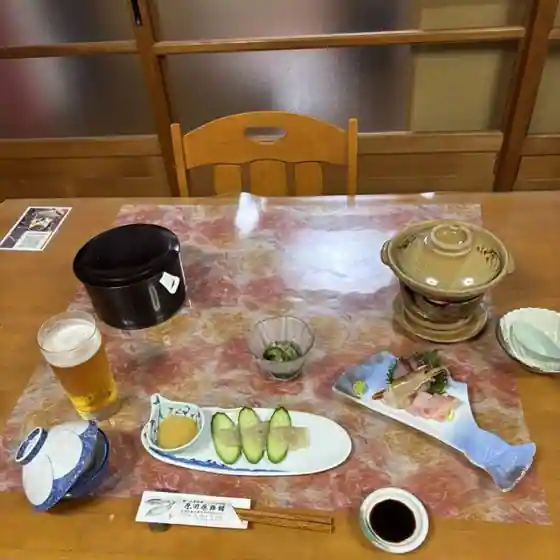
Harada Ya Ryokan
ヴァンベールの森
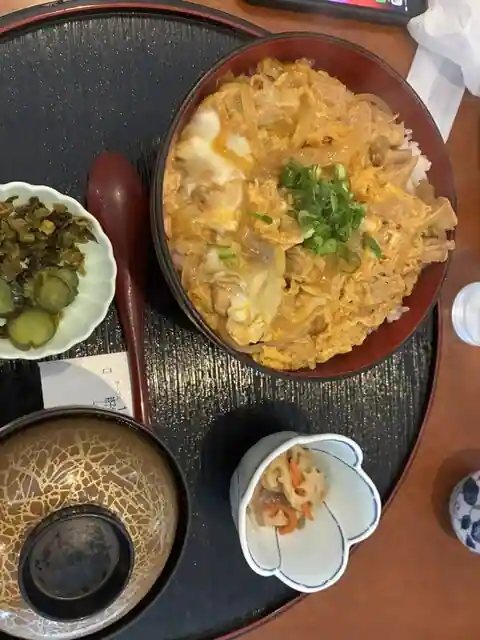
Vanberu No Mori
中田屋本舗
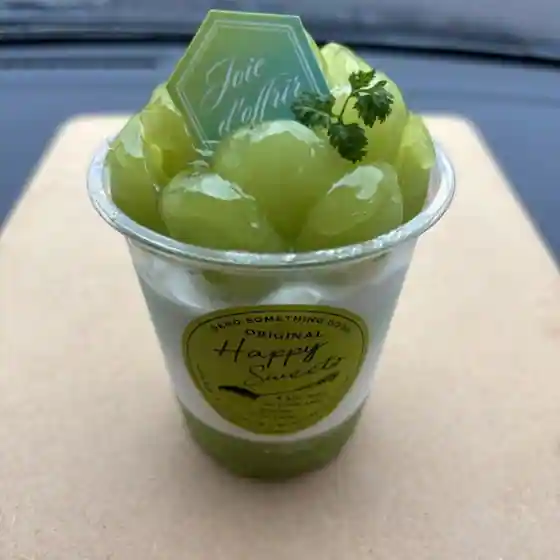
Nakada Ya Honpo
道の駅 むいかいち温泉
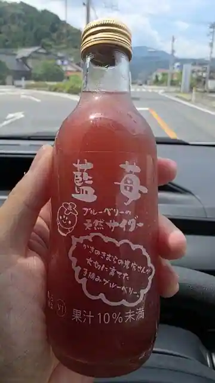
Michi No Eki Muikaichi Onsen
田園
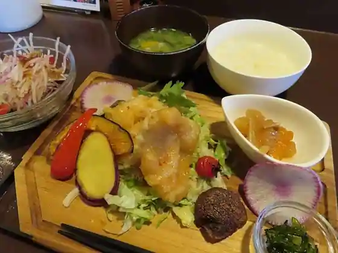
Den'En
ごはん屋 かきのき村
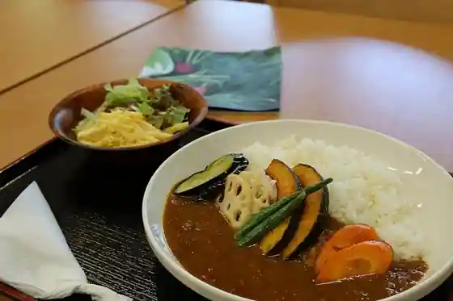
Gohan Ya Kakinoki Mura
えびす飯店
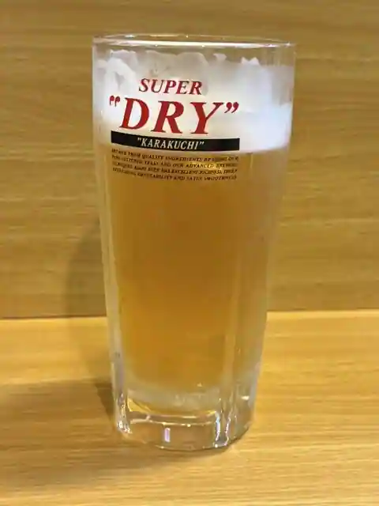
Ebisu Meshi
一休
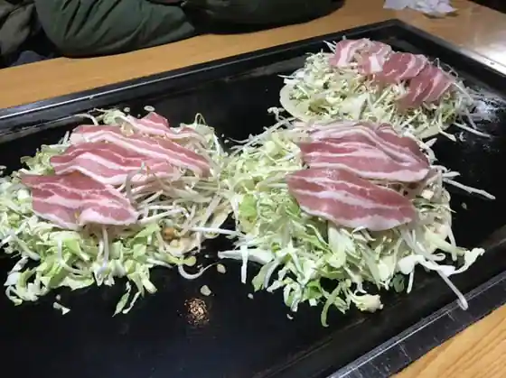
Ikkyu
あきやま
Akiyama
寿食堂
Hisashi Shokudo
桜乃
Sakura No
KEYAKI GARTEN
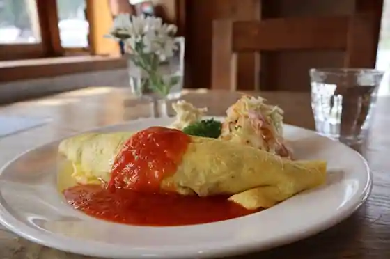
KEYAKI GARTEN
山カフェ ヘブン
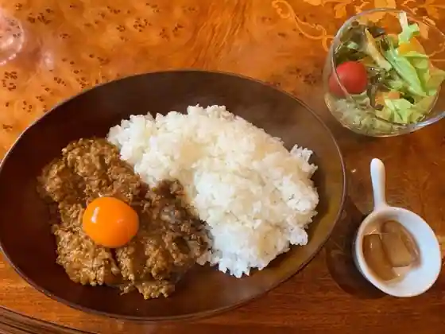
Yama Cafe Hebun
一心房
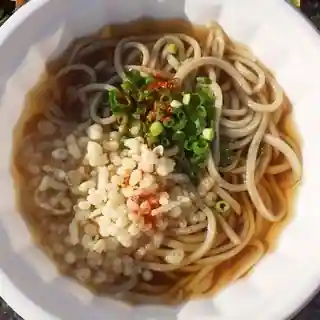
Isshin Bo
Slow Cafe MIZUTOKI
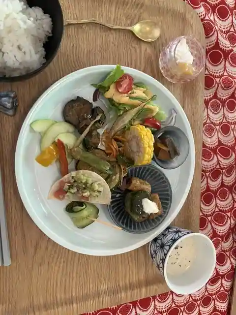
Slow Cafe MIZUTOKI
お食事工房 クック
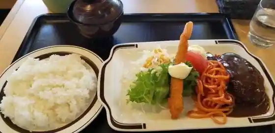
O Shokuji Kobo Kukku
道の駅 かきのきむら
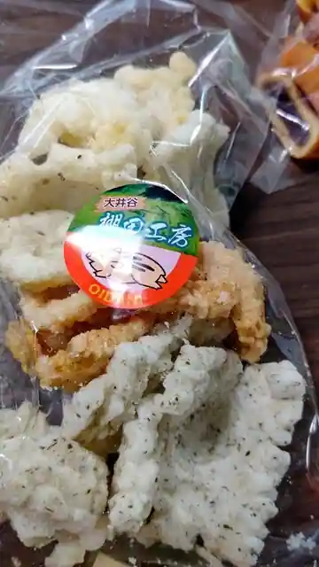
Michi No Eki Kakinokimura
Sights
Roadside Station Muikaichi Onsen (Sanchoku Bussan Kan Yakuro, Onsen Yu · Ra · Ra)

Kaki no Ki Onsen Hato no Yu

Mokubu Tani Onsen Matsuno Yu

Roadside Station (Kaki no Kimura)

Higan Hana Village
Yoshika Furusato Natsu Festival
Katakuri Village
Oi Tani no Tanada
Taka Shiri Kawa Ribasaidoroguhausu Village
Nakada Ya Honpo
Suigen Festival (Amagoi Shinji)
Suigen Park
Kaba Tani Gorge
Fukaya Gorge
Miroku Park no Shidare Sakura
Kaki no Ki Onsen
Sajiki Kurenai Soba Hanami Kai
Mike Koto Tokoro Akiyama
Yama Kafe Hebun
Kin Matsuri Min Matsuri Nogyo Bunkasai
Nagase Kyo
Ajidokoro Kaki Village
Ipponsugi
Kaba Tani Dam
Suigen Hall
Kusa no Niwa
Yasuzo Terayama Fumoto Gogi no Sato Roguhausu Village
PIZZA&PASTA Domenikana
Koyamakigyararii
Katakuri Festival
Shakunage Festival
Furusato Mura Otani Ya
Shiratani Kagura
Slow Cafe mizutoki
Mori Hanae Furawa Garden
Nagase Kyo Nature Park
Natsume no Sato Koryu Kan
Yoshika Town Hall